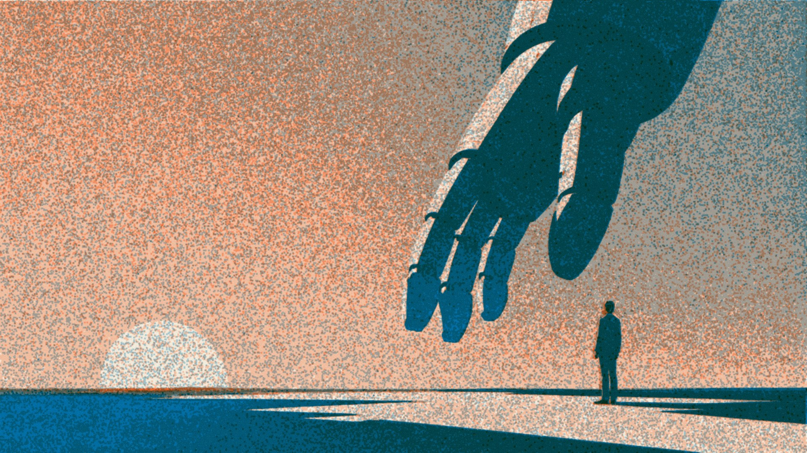
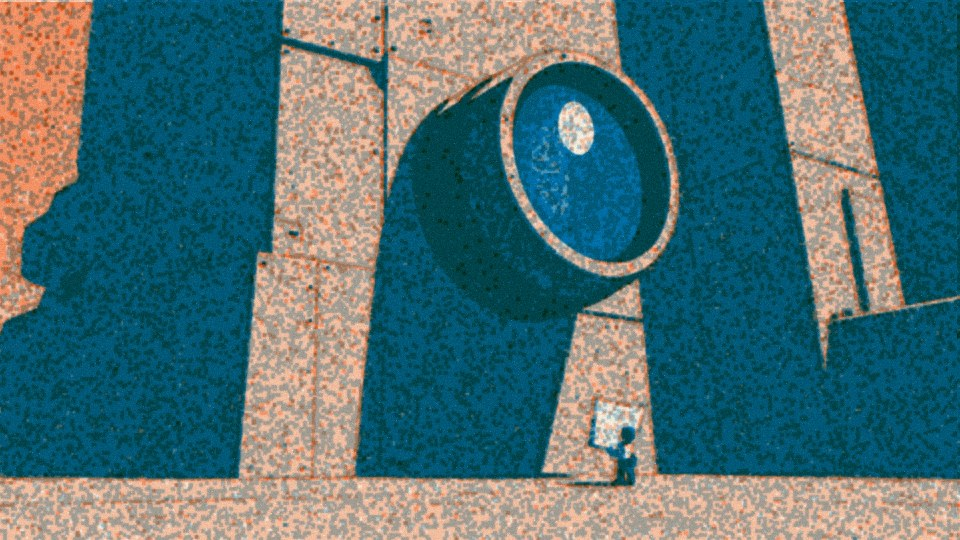
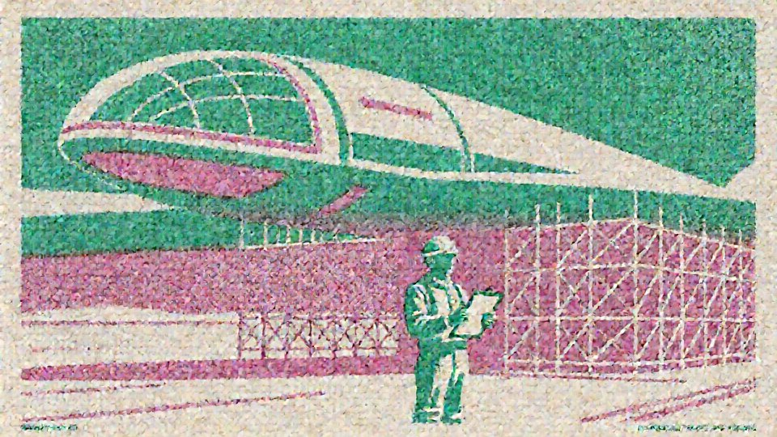
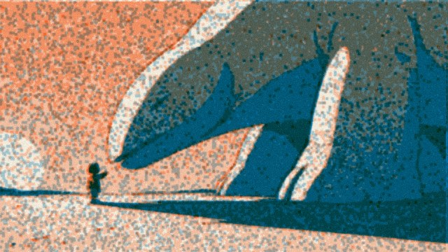
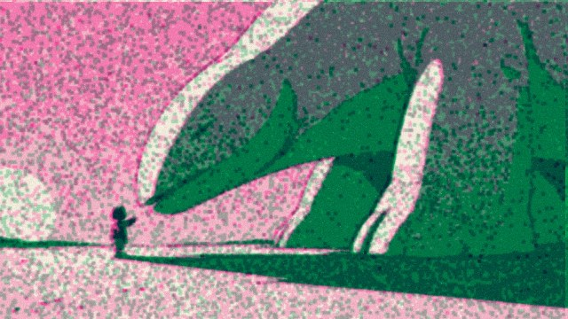
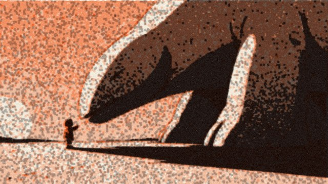
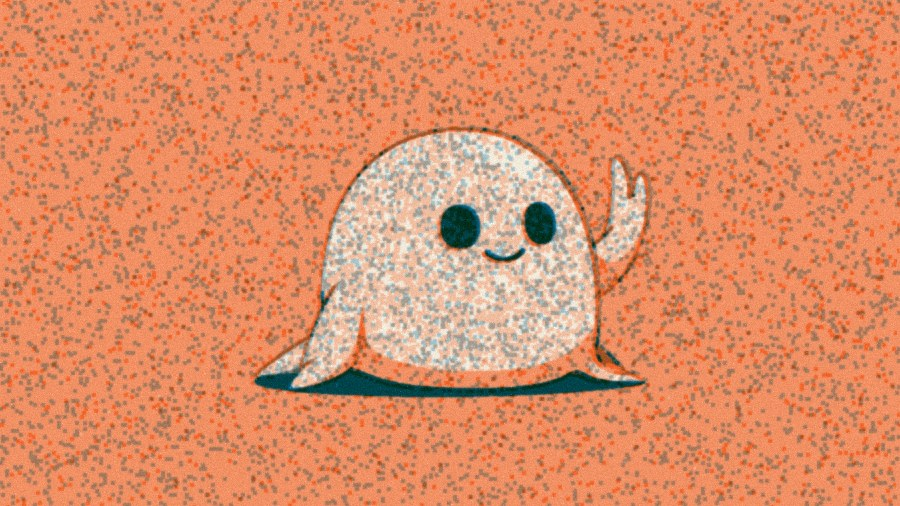
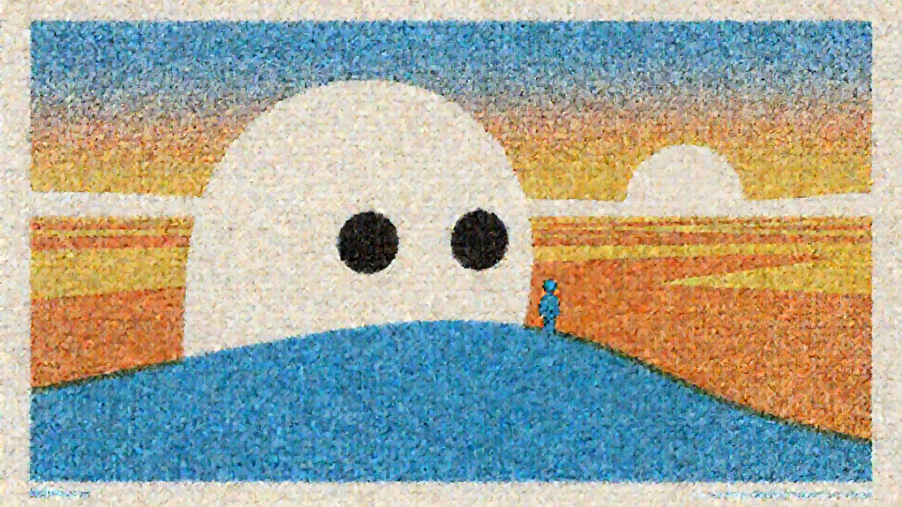

Intelligence is about to get a body.
Essays, films, and experiments about frontier technology becoming real — from someone who builds it. The right response isn't panic or hype. It's walking up close.

How closing a loop around the benchmark's own evaluator won a NeurIPS 2025 challenge.
The essay's argument, retold as a visual story. Keyframes are being drawn now.

Teaching a model to draw everything on this site — one LoRA, one world, printed in whatever inks are in the drum.
Every section of the site is the same world run through a different pair of inks — writing in blue and orange, the Lab in green and pink, notes in black and orange.



One flagship every few weeks. No feed, no roundups — only things worth remembering.

